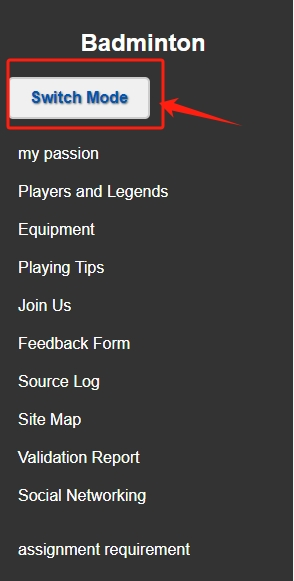

This page is the marking guide to your website that your tutor will use to find your elements. Do not name this page anything other than assignment.html (all lower case) or else we may not be able to find and mark your assignment elements. How to use this page:
badminton
Notes: Provide any notes you may have about this element here.
Notes: Provide any notes you may have about this element here.
Notes: Provide any notes you may have about this element here.
Notes: Provide any notes you may have about this element here.
Notes: Provide any notes you may have about this element here.
Notes: Provide any notes you may have about this element here.
Notes: Provide any notes you may have about this element here.
Notes: Provide any notes you may have about this element here.
I am doing storyboard/video (delete one so we know which to mark)
Notes: Provide any notes you may have about this element here.
Replace this line with your URL link to this element in your website if you choose to do this element or remove this section if you did not choose this element.
Notes: Provide any notes you may have about this element here.
Notes: Provide any notes you may have about this element here.
The website was initially built with a main content area and a static HTML sidebar. Because of this
arrangement,
the sidebar and the display area shared a single JavaScript file, which made it difficult to manage scripts that
were unique to particular pages. Because it restricted the site's components' flexibility and modularity, this
arrangement was not optimal.
In order to solve this, I looked into ways to give the scripting for each section of the page more independence.
Iframes were the solution I came across during my research, and at first it seemed like the ideal one. I was able to
separate the JavaScript environments of the sub-pages from the sidebar by embedding iframes within the main content
area.
The ability for each iframe to reference its own JavaScript files subsequently made managing scripts much easier
and
improved sub-page functionality.
But putting iframes into practice wasn't without its difficulties. The move necessitated considerable alterations
to the website's architecture for a novice in JavaScript. I put a lot of effort into changing the layout and
troubleshooting iframe integration problems, like responsiveness and navigation handling. I learned a lot about
troubleshooting and web architecture adaptation from this rigorous but worthwhile process.
I learned via additional research and community feedback that iframes are a little out of date and should not be
used for contemporary web applications after implementing them and overcoming the initial difficulties.
Performance,
security, and accessibility issues were raised because iframes can make content less secure, load more slowly,
and
create serious accessibility issues.
This revelation was eye-opening. It made me understand how crucial it is to conduct in-depth study and involve
the
community before choosing a technological solution. Alternatively, I could have chosen more contemporary and
reliable solutions like JavaScript frameworks or libraries that facilitate component-based architectures,
like
React
or Vue.js, if I had done more research on current web development trends and standards beforehand.
Within the
development community, these technologies are widely supported and recommended,
and they provide improved
security and performance.
link to extra css file (night mode)

link to social Networking page
Replace this line with your URL link to this element in your website.
Notes: Provide any notes you may have about this element here.
Replace this line with your URL link to this element in your website.
Notes: Provide any notes you may have about this element here.
I think this page is a good way to deeply learn Js, although it's just a demo right now
Replace this line with the CI activity you did or, if you attended the in-lab continuous improvement session, please give the date you attended the continuous improvement session.
Replace this line with the local URL to your report.